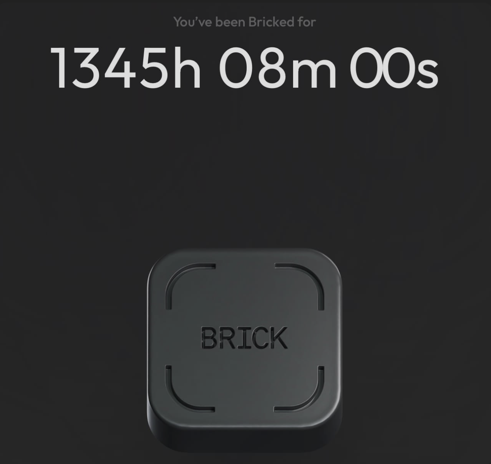

Logging Off: Reclaiming Attention in a Distracted World

1,345 hours off social media reminded me: if it matters to you, that's enough. It was quiet, unshared, unseen — and somehow, more meaningful. In today's world, that kind of break feels like rebellion. And that says a lot about our culture.
Social media was created to connect us. And in some ways, it still can, if used with intention. The question is: are you using it, or is it using you?
The more distance I got, the clearer it became: most of us are just performing. We're curating a version of ourselves we hope others will admire.
What I was actually doing
I used to post a lot. I thought it was vanity. But now I think it was deeper — status signaling, validation, the need to feel seen.
To be clear, I'm not anti-social media. One of the reasons I started posting was because I wanted to share something positive. To inspire people. To show what was possible. And sometimes, it did exactly that.
But somewhere along the way, I realized I wasn't just sharing anymore. I was performing. Even the good intentions started to feel like a performance.
The people who know you best already love you. They don't need constant updates. So when we post the new car, the vacation, the promotion — what are we really saying? And if it's just pride, why do we need hundreds of strangers to see it?
What the break revealed
I got tired of the small touch points — likes, emojis, comments. It felt like pseudo-connection. It started to feel hollow. I was showing up online, but knew I wanted something deeper.
When I stopped posting, I realized something I already knew: no one really cares. A few people checked in, and they were the ones I expected. Everyone else just moved on to the next thing. The next dopamine hit. The next parasocial scroll.
And honestly, I don't blame them. That's how the system was designed.
But I want something different. I want unfiltered conversations. Long walks with no phones. A life I don't need to crop, caption, or filter. I want my presence back.
What I'm taking forward
The kind of life that doesn't need to be documented in real-time to feel meaningful.
This essay is the start. I'm not logging off forever. I'm just learning how to log in with intention — and log out with peace.
Presence is worth protecting. Not everything needs an audience to matter.